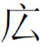
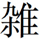
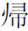
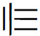

Thaïs一本 二·二○ 一月四日
英文学史一本 五·三○ 一月五日
美術をたづねて一本 二·二○
The Mind and Face of Bol.一本 一一·○○ 一月十五日
World’s Literature一本 一一·○○
童謡及童話の研究一本 ○·三○ 一月十六日
レーニンのゴリキヘの手紙一本 ○·八○
The Outline of Art二本 二○·○○ 一月十九日
神話学概論一本 二·五○四五·三○○
美術全集第29册一本 一·七○ 二月一日
階級意識トハ何ゾヤ一本 ○·五○
下女の子一本 三·○○
結婚一本 二·七○
大海のとほり一本 二·四○
空想カラ科学ヘ一本 一·六○ 二月五日
通論考古学一本 三·九○
史的唯物論一本 一·○○ 二月七日
拷問と虐殺一本 ○·六○
愛の物語一本 ○·四○
ロシア瘆働党史一本 ○·九○ 二月十日
敦煌石室碎金一本 一·○○ 二月十二日
敦煌零拾一本 一·○○
簠斋臧镜二本 四·○○
Mitjas Liebe一本 达夫赠
支那革命の諸问題一本 ○·四五○ 二月十三日
唯物論と弁証法の根本概念一本 ○·四五○
弁証法と其方法一本 ○·四五○
新反牷派ニ就イテ一本 ○·六○
辩证法杂书四本 三·五○ 二月十九日
進化学説一本 一·○○
唯物史観解説一本 二·二○ 二月二十一日
写真年鑑一本 三·三○
文学と革命一本 二·二○ 二月二十三日
世界美術全集1一本 一·六五○
三国志平话一本 盐谷节山赠
杂剧西游记五部五本 同上
旧刻小说词曲杂景片七十四枚 辛岛骁赠
露国の文芸政策一本 一·○○ 二月二十七日
農民文芸十六講一本 三·一○
マキシズムの謬論一本 ○·五○ 二月二十九日
海外文学新選三本 一·九○四八·○○○
ロシアの牢獄一本 一·○○ 三月二日
鑑鏡の研究一本 七·二○ 三月六日
美術意匠写真類聚十一本 一一·○○ 三月十日
希臘の春一本 ○·二○
九十三年一本 ○·四○
階級争理論一本 ○·七○ 三月十四日
唯物的歷史理論一本 一·二○
一週間一本 二·二○

辞林一本 四·五○表現主義の戢曲一本 ○·六○ 三月十六日
現代英文学講話一本 二·二○
漫畫大観一本 六·二○ （豫约）
绖涇概念一本 ○·七○ 三月二十日
民族社会国家観一本 ○·七○
社会思想史大要一本 二·八○
史的唯物論略解一本 一·一○
新ロシア文化の研究一本 一·一○
革命及世界の明日一本 ○·三○ 三月二十五日
世界美術全集第2册一本 一·七○
Pogány绘本Rubáiyát一本 五·○○ 三月二十八日
弥耳敦失楽園画集一本 三·八○ 三月三十日
但丁神曲画集一本 六·六○
弁証的唯物論入門一本 二·二○
Hist.Materialism一本 七·五○
階級争小史一本 ○·三五○
マルクスの弁証法一本 ○·六五○
西洋美術史要一本 五·○○
私の畫集一本 一·四○七八·三○○
世界文蕓名作畫譜一本 二·二○ 四月二日
佐野学

稿二本 二·二○ 四月四日研幾小録一本 四·四○
杂文学书七本 二·六○
蘇俄美術大観一本 李秉中赠 四月七日
老莲绘〔会〕真记图一本 ○·五○ 四月八日
社会文蕓叢書二本 一·八○ 四月九日
独乙語自修の根柢一本 三·八○ 四月十二日
ファシズムに牷する争一本 ○·五○
淶鮮考古行脚一本 一·八○
意匠美術類聚一本 一·一○
阮刻列女传四本 八·○○ 四月十三日
唐人小说八种十三本 七·○○
目莲救母戏文三本 一·○○
マルクス主義と倫理一本 ○·七○ 四月十四日
社会意識学概論一本 二·四○ 四月十七日
芸術の始源一本 三·六○
The Power of a Lie一本 ○·五○ 四月二十二日
百梅集二本 七·二○ 四月二十三日
Thaïs一本 一一·二○
美術全集第16一本 一·六○ 四月二十五日
現代漫畫大観2一本 先付
精神分析入門二本 三·四○
苦悶的象徵一本 二·○○七○·五○○
マルクス主義的作家論一本 ○·六○ 五月一日
プロレタリヤ文学論一本 一·六○
社会主義文学叢書三本 二·二○
現代のヒーロー一本 ○·四○ 五月七日
チェーホフ傑作集一本 一·一○
フイリツプ短篇一本 一·○○
陶元庆的出品一本 璇卿赠
元庆的画五份四十枚 同上
世界文化史大系上一本 八·○○ 五月十一日
ケーベル随筆集一本 ○·四○
露西亜文学研究一本 三·五○
フリオ·フレニトと其弟子達一本 二·○○ 五月十六日
メツザレム一本 一·○○
仏陀

る一本 ○·八○ 五月十八日世界美術全集30一本 一·七○ 五月二十四日
漫畫大観（6）一本 先付
社会運動辞典一本 二·○○
支那は眼 め行く一本 一·二○
め行く一本 一·二○
歷史過程の展望一本 ○·四○
革命後のロシア文学一本 二·○○ 五月卅一日三○·○○○
元庆的画四部四本 作者赠 六月一日
李涪刊误一本 ○·六○ 七[六]月十日
直斋书录解题六本 二·○○
开有益斋读书志六本 六·○○
殷契拾遗一本 一·二○
醉菩提四本 ○·八○
英译Faust一本 五·○○ 六月十二日
世界美術全集（6）一本 一·六五○ 六月十八日
輿論と群集一本 一·五○
レーニンの弁証法一本 ○·七○ 六月二十六日
一革命家の人生社会観一本 一·六○
蘇聯文蕓叢書三本 二·六五○
性と性格二本 二·四○
世界文学物語二本 三·五○
階級社会の諸問題一本 ○·九○ 六月三十日 三○·五○○
漫畫大観（4）一本 先约 七月二日
New Book Illustration in France一本 四·三○ 七月九日
Art and Publicity一本 四·三○
ブランド一本 ○·八○ 七月十二日
汉画象拓本一枚 一·○○ 七月十三日
侯愔墓志铭拓本一枚 二·○○
景印贯休画罗汉象拓本一本 一·四○
雷峰塔砖中陀罗尼翻刻本一卷 ○·四○
石印明刻本还魂记四本 二·七○ 七月十六日
王刻红楼梦二十四本 九·○○
百美新咏四本 一·八○
八龙山人画谱一本 ○·七○
近代劇全集二本 二·二○ 七月十八日
十月一本 一·○○
殷虚文字类编六本 七·○○ 七月十九日
赤い恋一本 一·六○ 七月二十三日
恋愛の道一本 ○·八○
乱婚裁判一本 ○·五○
マルクス主義と蕓術運動一本 一·六○
世界美術全集18一本 一·七○
啸堂集古录二本 三·五○ 七月三十日
曹子建文集三本 四·八○
蔡中郎文集二本 ○·四七○
昭明太子文集一本 ○·二七○
国秀集一本 ○·二○
元曲选四十八本 一○·九六○六五·二○○
マルクス主義の根本問題一本 ○·六○ 八月一[二]日
雄鹒とアルルカン一本 五·二○
アポリネール詩抄一本 二·○○
The Modern Woodcut一本 三·四○ 八月四日
梅花喜神谱二本 一·五○ 八月八日
世界文化史大系（下）一本 八·三○ 八月十日
ツァラツストラ解説及批評一本 一·二○
開かれぬ手紙一本 一·○○
支那文蕓論藪一本 四·○○
漫畫大観（3）一本 先付 八月十六日
奇觚室吉金文述十本 一四·二○ 八月十九日
世界美術全集（19）一本 一·七○ 八月二十一日四四·一○○
Poems of W.Whitman 二·○○ 九月二日
Studies from Ten Literatures一本 六·五○
掌故丛编三本 幼渔寄赠
マルクス蕓術論一本 一·三○ 九月三日
近世欧洲絵畫十二講一本 四·○○ 九月七日
草の葉（Ⅱ）一本 一·五○ 九月十七日
世界美術全集（31）一本 一·八○ 九月二十日
观堂遗集三四集十四本 一二·○○ 九月二十七日
铸鼎遗闻四本 二·四○
瀛壖杂志二本 一·二○
历代名人画谱四本 ○·八○
申报馆所印杂书五种十八本 三·六○
笺经室丛书三本 一·○○三八·一○○
漫畫大観（7）一本 一·一○ 十月四日
观堂遗书二集十二本 一○·○○ 十月八日
蕓術と唯物史観一本 三·三○ 十月十日
階級社会の蕓術一本 一·一○
女性のカツト一本 三·一○
思想家としてのマルクス一本 二·○○ [十月十二日]
社会主義及ビ社会運動一本 一·一○ 十月十六日
漫畫大観（8）一本 一·一○
漫畫西游記一本 一·一○
二葉亭全集三本 七·九○
漫畫大観（五）一本 先付 十月二十日
CARICATURE OF TODAY一本 五·二○ 十月二十四日
日本童話選集（2）一本 四·一○ 十月二十五日
支那英雄物語一本 一·○○
世界美術全集（24）一本 一·六○ 十月二十九日
婚姻及家族の窎展過程一本 一·○○
史的唯物論（上）一本 ○·八○
ドン·キホーテ一本 侍桁寄来 十月三十一日五一·五○○
Springtide of Life一本 六·八○ 十一月一日
社会進化の鉄則一本 ○·六○
仏蘭西詩選一本 一·四○
恋愛と新道德一本 一·四○ 十一月七日
蕓術論一本 ○·六○
手蕓図案集一本 二·七○
荷牐丛谈二本 蒋径三寄赠 十一月九日
星槎胜览一本 同上
最後の日記一本 二·二○ 十一月十五日
岩波文庫二本 ○·九○
詩の形態学序説一本 三·二○ 十一月十七日
现今欧洲作家传一本 七·五○ 十一月二十日
人生遺伝学一本 四·四○ 十一月二十二日
セメント一本 二·四○
世界美術全集（

）一本 一·七○ 十一月二十四日露西亜三人集一本 一·一○
社会進化の鉄則（下）一本 ○·八○ 十一月三十日
蕓術の唯物史観的解棻一本 一·○○
漫畫大観（九）一本 一·一○
近代仏蘭西詩集一本 二·二○四二·○○○
蕓術の社会底基礎一本 一·一○ 十二月七日
Goethe’s Briefe u.Tagebücher二本 公侠赠 十二月十日
マルキシストの見るトルストイ一本 ○·七○ 十二月十二日
最新生理学一本 八·二○
HOLY BIBLE一本 九·○○
Contemp.Movements in Eu.Lit.一本 五·九○ 十二月十四日
Fairy Flowers一本 六·三○
世界文学と無産階級一本 一·○○ 十二月二十日
巴黎の憂鬱一本 二·○○
伊索寓言画本一本 四·四○ 十二月二十四日
唯物史観入門一本 一·二○ 十二月二十七日
創作版畫の作り方一本 二·○○
生理学粹一本 四·四○
支那革命の現階段一本 ○·三五○ 十二月三十一日
世界美術全集（八）一本 一·七五○
漫畫大観（十）一本 先付
業間録一本 三·○○五一·三○○
总计一年共用五九四·八○○，
平匀每月计用四七·九○○。
[1] 还薪水六十 因劳动大学校方压制学生进步活动，鲁迅不再为该校开设文学讲座课，故退还薪水。
[3] 《海鹰》 故事片，美国第一国家影片公司1924年出品。
[4] 所观电影为《战地莺花录》（Orphans of The War）。
[5] 蔼覃象五十枚 鲁迅原拟在沪装订《小约翰》五十册，故留下作者像五十枚，现决定全数在北京装订，遂将所留望·蔼覃像寄未名社。
[6] 译《近代美术史潮论》 鲁迅自1927年底译起，是日毕。先连载于《北新》半月刊第二卷第五期至第三卷第五期（1928年1月至1929年1月），后由上海北新书局出版单行本。
[7] 暨南大学游艺会 暨南大学于是日及次日在北四川路横浜桥中央大会堂举行“特别童子军筹款游艺会”。
[8] 司徒乔来画象 指司徒乔为鲁迅作炭笔速写画像。此画曾发表于1928年4月号《良友》画报，1933年7月刊入《鲁迅杂感选集》。
[9] 璇卿来 陶元庆本日来访，鲁迅托他绘制《朝花夕拾》封面。
[10] 往司徒乔寓观其所作画 司徒乔拟举办个人画展，鲁迅往观其画后，翌日作《看司徒乔君的画》一文。后收入《三闲集》。
[11] 梁得所来摄影 梁得所为《良友画报》索取鲁迅照片，本日所摄照片中的一张用于该画报1928年4月号。
[12] 指译《思想·山水·人物》。随笔集，日本鹤见祐辅作。
[13] 往祥丰里制版所 祥丰里，位于虬江路近北四川路。是日往该所当是为《奔流》创刊号的插图处理制版事宜。
[14] 司徒乔个人绘画展览会 即在位于北四川路虬江路角“乔小画室”举办的“乔小画室春季展览会”，展出作品共七十二幅。
[15] S.SEKIR小画展览会 指在上海南京路十号举办的德（？）国画家斯吉尔的画展，展出素描、写生画二二六件。
[16] 别发洋行 美国侨民开设的商号，亦销售图书。位于南京路（今南京东路）。
[20] 《北新》半月刊编者潘梓年来信附有读者陈德明函，对《近代美术史潮论》插图提出意见。鲁迅的复信以《关于〈近代美术史潮论〉插图》为题，发表于该刊第二卷第十二号（1928年5月），现编入《集外集拾遗补编》。
[21] 得素园信 韦素园在信中告知北京未名社于4月7日被查封，李霁野、台静农、韦丛芜被捕之事。
[22] 陈望道来约讲演 复旦大学附属实验中学举办“火曜讲话”，每周二下午邀请名家演讲，陈望道来约鲁迅作第一讲。
[23] 《四骑士》 又名《儿女英雄》，美国大都会影片公司1921年出品。上海大戏院，在北四川路虬江支路口。
[24] 鲁迅到上海后，肺病复发，初服阿司匹林退烧。经福民医院诊治后始知病情严重，前后往诊五次。
[25] 福民医院 日本人开设，位于北四川路，院长顿宫宽。其前身为佐佐木金次郎创办的佐佐木医院。鲁迅与该院医生多有交往，常去看病，并多次介绍亲友往诊。
[26] 江湾实验中学 即复旦大学附属实验中学。创办于1925年，校长由复旦大学校长李登辉（1873—1947）兼任。1927年12月起，陈望道任该校行政委员会代理主任。鲁迅讲题为《老而不死论》，参看《译文序跋集·〈毁灭〉第二部一至三章译后记》。
[27] 所看电影为《医验人体》，科学教育影片，德国友芳影片公司出品。
[28] 得徐诗荃信 徐诗荃于15日在复旦实验中学为鲁迅讲演作记录，此信附来记录稿。
[31] 赵景深、徐霞村突来索稿 徐霞村等拟办刊物《熔炉》，是日中午偕赵景深来向鲁迅约稿，鲁迅未允。
[33] 《坟》之校本 未名社拟重印《坟》，鲁迅将该书校订后寄去。重排本于1929年3月出版。
[34] 赴杭州 鲁迅与许广平应许钦文、章廷谦之邀往杭州游憩。
[35] 至西泠印社茗谈 鲁迅是日谈话内容，主要有关萧伯纳和高尔基的作品，并及中国的绘画雕刻等。
[36] 抱经堂 古旧书店，1915年创办于杭州。店主朱遂翔。后在上海设分店。出有书目三十余册。鲁迅在该店购书还有《奇觚室吉金文述》十册等。
[37] 即《谈谈复旦大学》。徐诗荃作，署冯珧。鲁迅将之发表于《语丝》周刊第四卷第三十期（1928年7月23日）。此文揭露了复旦大学的腐败现象，遭致该校出身的国民党浙江省党部委员许绍棣之忌，成为该党部1930年呈请通缉鲁迅的原因之一。
[38] 丙寅医学社 医学团体。1926年（夏历丙寅）8月在北京成立，故名。主持人杨济畴。
[39] 往四近看屋 因原寓所环境嘈杂，又因后门邻居家孩童经常顽皮搅扰，故觅屋迁居。9月9日自景云里二十三号移至十八号。
[41] 即《捕狮》。小说，法国腓立普作。鲁迅译文发表于《大江月刊》创刊号（1928年10月），后收入《译丛补》。
[42] 铜版五块 即《奔流》月刊第一卷第五本所刊关于惠特曼书画五种插图的铜版。
[43] 伴侣杂志社 香港的一家文艺月刊社，司徒乔曾为作封面画和插图。来信可能系向鲁迅约稿。
[44] 大江书店 应作大江书铺。陈望道、汪馥泉1927年创办于上海。出版《大江月刊》、《文艺研究》等刊物。1929年曾出版鲁迅所译《现代新兴文学的诸问题》（日本片上伸著）、《艺术论》（苏联卢那察尔斯基著）等书。
[45] 即《农夫》。小说，苏联雅各武莱夫作。鲁迅译文发表于《大众文艺》月刊第一卷第三期（1928年11月），后收入《译丛补》。
[46] 现代书局 洪雪帆、张静庐1927年创办于上海。以出版文艺书籍为主，曾发行《大众文艺》、《现代》月刊等刊物。
[47] 大陆大学 国民党改组派所办的大学，创立于1927年，校长陈公博。是日鲁迅应许德珩之请前往演讲，主要阐述关于无产阶级革命文学的意见，一说讲题为《从文学革命到革命文学》，讲稿佚。
[48] 图板三块 即印入《奔流》第一卷第六本的《跳蚤》、《坦波林之歌》和《儿童的将来》三文的插图铜版。
[49] 所看电影为《有情人》，美国大都会影片公司1927年出品。ISIS，即上海大戏院。
[50] 所看电影为《忘恩岛》，美国哥伦比亚影片公司出品；《非洲猎怪》，美国FOB公司1926年出品。ODEON，即奥迪安大戏院，在北四川路虬江路口。后毁于“一·二八”战火。
[51] 《暹罗野史》 原名《CHANG》，美国派拉蒙电影公司1927年出品。光陆大戏院，在乍浦路桥南堍。